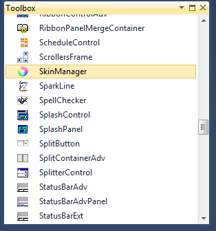

The following are steps to add the Skin Manager control to an application through Visual Studio:
3. Create a new Windows Form application in Visual Studio.
4. Drag the Skin Manager from the Toolbox tab to the designer.

Figure 1: ToolBox
5. Skin Manager is added.
6. Open the Properties Window to assign parent control and apply skin.